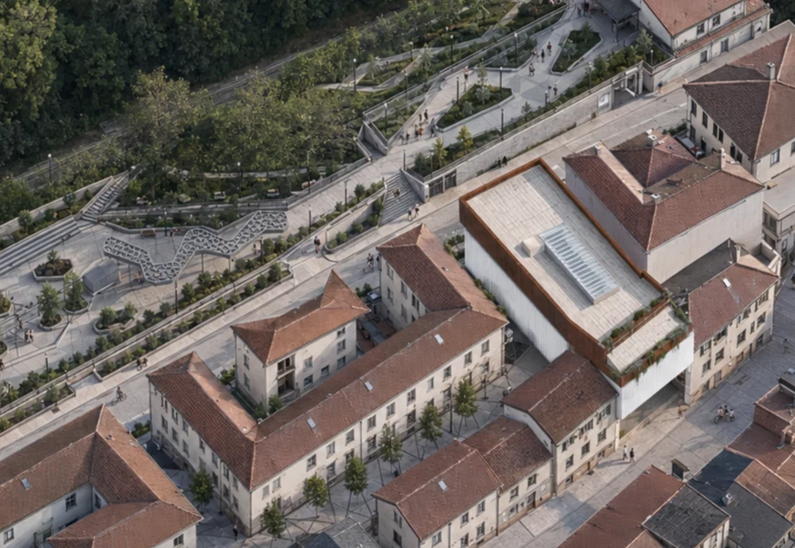
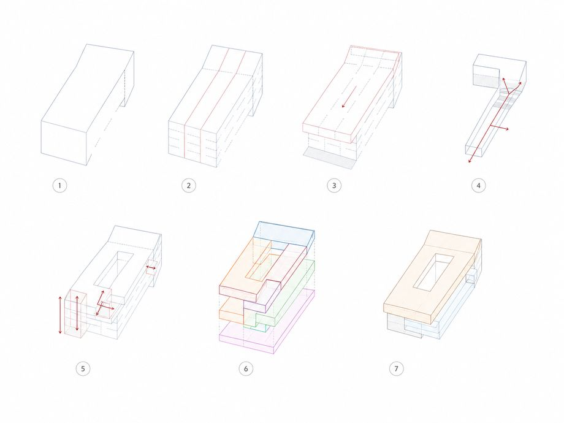
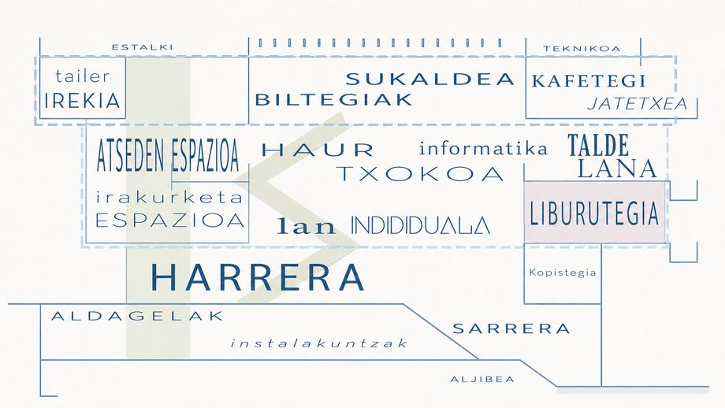
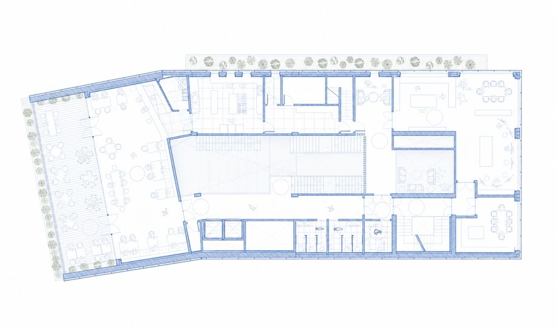
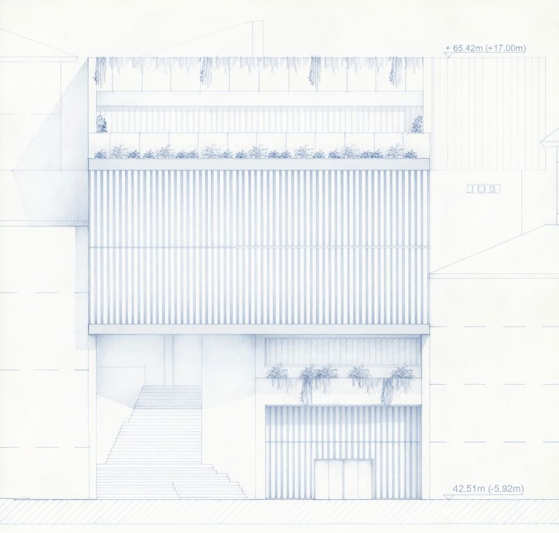
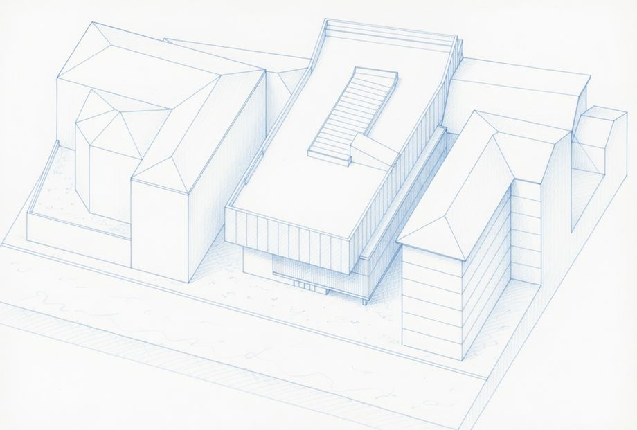

Trabajo Fin de Máster · Máster habilitante
Biblioteca pública y apeadero · Andoain
Coser dos cotas urbanas con un edificio abierto: parque, apeadero y una biblioteca que respira luz cenital.

UbicaciónÁmbito de Apeadero, Andoain (Gipuzkoa)
Año2021 – 2022
ProgramaBiblioteca, equipamiento y regeneración del espacio urbano
RolProyecto académico individual completo
El proyecto
La regeneración del ámbito de Apeadero parte de una decisión urbana: un aparcamiento semienterrado libera la calle y permite ampliar el parque Txistoki. Sobre esa base, la biblioteca actúa como pieza de costura entre las dos cotas del pueblo.
El edificio se organiza en torno a un atrio con luz cenital, con un programa abierto y flexible: lectura, infancia, talleres y cafetería. La celosía de fachada matiza la luz sobre un zócalo acristalado que mantiene la planta baja permeable.
Qué hice
- De la escala urbana al detalle: diagnosis, estrategia y proyecto de edificio.
- Programa completo de equipamiento: lectura, infancia, talleres, cafetería.
- Producción íntegra de planos, secciones y visualizaciones.
AutoCADRhinocerosLumionPhotoshop
Ver los recorridos en vídeo 1 vídeo
Luz, recorrido y vida pública


Visualizaciones de proyecto. Entorno y vegetación interpretados.
El edificio y la ciudad









